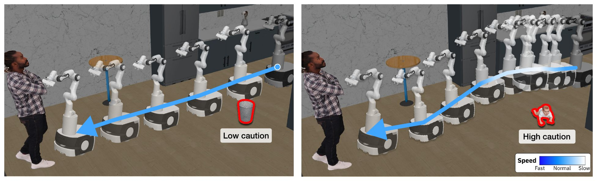

🚦 OSMA-Bench
Benchmarking Obstacle-Conditioned Safety in Household Robot Navigation
Reaching the goal without collision is not enough. A safe robot keeps more clearance and moves more slowly past a baby than past a trash bin, and slows down further as it gets closer. The caution also has to be selective: being equally careful around everything only wastes time. OSMA-Bench, the Obstacle-Conditioned Safe Motion Adaptation Benchmark, tests whether navigation policies show this caution in their executed motion.

How it works
- Matched comparisons. Only the obstacle on a fixed route changes: 18 obstacles over 7 routes × 5 layouts, 625 tasks (Benchmark).
- Obstacle Caution Tiers. 🔴 High (living) > 🟡 Moderate (fragile) > 🟢 Low (robust) (Benchmark).
- Two levels of scoring. Task level: TSR and CFSR. Motion level: the Semantic Sensitivity Index (SSI, −1 to 1) checks whether clearance and near-obstacle speed, acceleration and jerk follow the tier order (Metrics).
Comparison with existing robot safety and navigation evaluations
Evaluations that score executed motion do so around people [1–5] or under sensor attacks [14]; the others score scene understanding, plans, judgments or skill execution [6–13]. None compares obstacles in matched tests or applies context-aware criteria.
| Benchmark | Evaluation focus | Motion-level evaluation | Matched tests | Context-aware criteria |
|---|---|---|---|---|
| Social navigation [1, 2] | Human proximity | ✓ Robot motion | ✗ | ✗ |
| Human-aware VLN [3, 4] | Human dynamics | ✓ Robot motion | ✗ | ✗ |
| Path Etiquette [5] | Social etiquette | ✓ Robot motion | ✗ | ✗ |
| VLM navigation [6, 7, 8] | Scene understanding | ✗ Plan / reasoning | ✗ | ✗ |
| ASIMOV [9] | Plan / constitution | ✗ Plan / reasoning | ✗ | ✗ |
| SAFEMIND [10] | Plan correctness | ✗ Plan / reasoning | ✗ | ✗ |
| HomeSafe-Bench [11] | Unsafe action detection | ✗ Video judgment | ✗ | ✗ |
| IS-Bench [12] | Hazard handling | ✗ Skill execution | ✗ | ✗ |
| BadRobot [13] | Adversarial (jailbreak) | ✗ Plan / reasoning | ✗ | ✗ |
| ANNIE [14] | Adversarial (sensor) | ✓ Robot motion | ✗ | ✗ |
| OSMA-Bench (ours) | Obstacle-conditioned motion adaptation | ✓ Robot motion | ✓ | ✓ |
| Column | Meaning |
|---|---|
| Motion-level evaluation | ✓ explicit assessment of executed low-level motion, such as clearance, speed or collisions; ✗ not a primary target (the text gives the evaluation level) |
| Matched tests | obstacle identities or caution tiers are compared while the layout, the obstacle position and the start–goal pair stay fixed |
| Context-aware criteria | safety criteria that depend on the situation |
References
- N. Tsoi et al. SEAN: Social environment for autonomous navigation. HAI, 2020.
- A. Biswas et al. SocNavBench: A grounded simulation testing framework for evaluating social navigation. ACM Transactions on Human-Robot Interaction, 2022.
- H. Li et al. Human-aware vision-and-language navigation: Bridging simulation to reality with dynamic human interactions. NeurIPS, 2024.
- Y. Dong et al. HA-VLN 2.0: An open benchmark and leaderboard for human-aware navigation in discrete and continuous environments with dynamic multi-human interactions. arXiv:2503.14229, 2025.
- Z. Fang et al. From obstacles to etiquette: Robot social navigation with VLM-informed path selection. IEEE RA-L, 2026.
- T. Windecker et al. NaviTrace: Evaluating embodied navigation of vision-language models. arXiv:2510.26909, 2025.
- M. J. Munje et al. SocialNav-SUB: Benchmarking VLMs for scene understanding in social robot navigation. CoRL, 2025.
- T. Taniguchi et al. Towards safer mobile agents: Scalable generation and evaluation of diverse scenarios for VLMs. arXiv:2601.08470, 2026.
- P. Sermanet et al. Generating robot constitutions & benchmarks for semantic safety. CoRL, 2025.
- R. Chen et al. SafeMind: Benchmarking and mitigating safety risks in embodied LLM agents. arXiv:2509.25885, 2025.
- J. Pu et al. HomeSafe-Bench: Evaluating vision-language models on unsafe action detection for embodied agents in household scenarios. arXiv:2603.11975, 2026.
- X. Lu et al. IS-Bench: Evaluating interactive safety of VLM-driven embodied agents in daily household tasks. AAAI, 2026.
- H. Zhang et al. BadRobot: Jailbreaking embodied LLM agents in the physical world. ICLR, 2025.
- Y. Huang et al. ANNIE: Be careful of your robots. arXiv:2509.03383, 2025.
What the paper finds
The paper evaluates 20 policies in three groups: 4 VLAs, and 8 open-weight VLMs each run through VoxPoser and through PIVOT. Policies know which obstacles need caution, but their motion does not show it. Each research question's result, and the commands that reproduce it, are in Experiments.
Documentation
| Page | Paper | Contents |
|---|---|---|
| Getting started | container, assets, a VLM server and one smoke run | |
| Benchmark | §3.1, App. B | matched comparisons, caution tiers, routes, layouts, task classes |
| Metrics | §3.2, App. C | TSR, CFSR, SSI and how to compute them |
| Policies | §4.1, App. D | the VLA, VoxPoser and PIVOT groups and how to run them |
| Experiments | §4, App. F, G | how to run and score RQ1–RQ3, with each result |
Repository layout
| Path | Contents |
|---|---|
benchmark/robocasa/ |
RoboCasa with the OSMA-Bench tasks, the episode ledger and the metrics (submodule) |
benchmark/robosuite/ |
robosuite, the simulation core under RoboCasa (submodule) |
policy/VLA/, policy/Voxposer/, policy/PIVOT/ |
the three policy groups; Voxposer also holds the shared holonomic waypoint follower (submodules) |
docker/ |
container image and launcher |
scripts/ |
run and analysis utilities, including merge_seed_shards.py |
page/ |
the project page, published to osma-bench.github.io (with the docs under /docs/) |
Clone
git clone https://github.com/OSMA-Bench/OSMA-Bench
cd OSMA-Bench
Note
OSMA-Bench/OSMA-Bench is a single-commit snapshot with every submodule inlined, so there is no submodule step.
Do not add --remote: it moves the submodules to their branch heads instead of the commits
recorded in this repository.
Continue with Getting started.